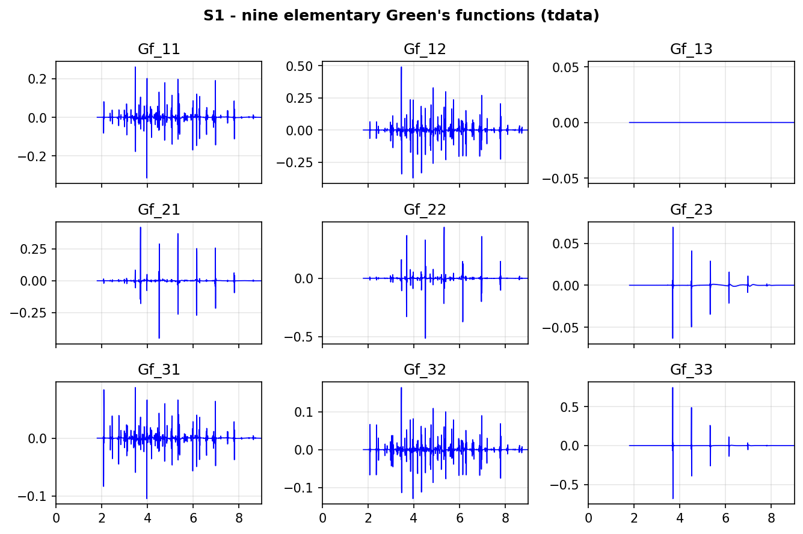
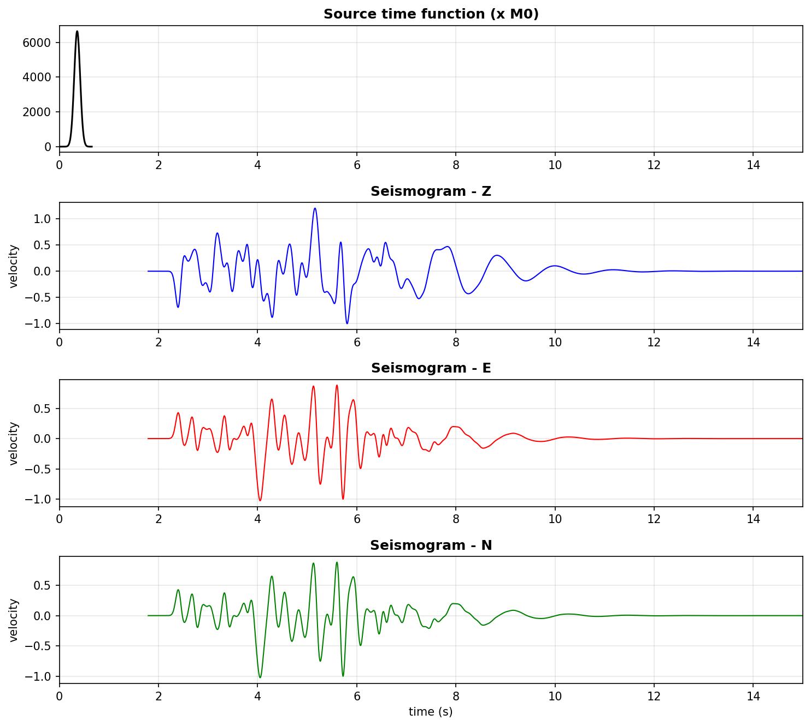

The FK method¶
How ShakerMaker solves the elastic wave equation in a layered half-space. The treatment here is at an intermediate level, the key equations and the logic of the solution, without the full algebra. For the complete derivation see the references.
The idea in one line¶
The elastodynamic equation of motion is a second-order vector PDE in four dimensions \((x, y, z, t)\). The FK method peels off three of those dimensions with successive integral transforms, until what remains is a first-order ordinary differential equation in depth \(z\) alone, which a layered medium solves exactly, layer by layer.
The transform chain¶
Four nested transforms reduce the problem:
- Fourier in time \(t \to \omega\) turns the wave equation into a Helmholtz problem at each frequency.
- Cylindrical (azimuthal) harmonics in \(\theta\) separate the angular dependence into modes \(m\), using the orthonormal vector harmonics \(\mathbf{R}_m^k,\ \mathbf{S}_m^k,\ \mathbf{T}_m^k\) built from the Bessel function \(J_m(kr)\).
- Hankel transform in the radial distance \(r \to k\) introduces the horizontal wavenumber \(k\), the "wavenumber" in "frequency–wavenumber".
Each transform is invertible, so the displacement at the receiver is recovered by the inverse Hankel (\(k\,dk\)) and inverse Fourier (\(\omega\)) integrals, the FK double-integral representation of the wavefield:
Everything in the method is the construction of the three scalar kernels \(U_z, U_r, U_\theta\), the depth-dependent amplitudes of the wavefield at wavenumber \(k\) and frequency \(\omega\).
The depth ODE¶
Collecting the displacement and depth-traction coefficients into a single
six-component displacement–stress vector (Zhu's ordering, matching the
Fortran kernel.f):
inserting the harmonic expansion into the wave equation turns the PDE into a first-order linear ODE in depth,
The matrix \(\mathbf{M}\) is block-diagonal: the first four components \((U_r, U_z, T_z, T_r)\) are the P–SV (in-plane) motion and the last two \((U_\theta, T_\theta)\) are the SH (out-of-plane) motion. For an isotropic, vertically layered medium the two blocks decouple completely, P–SV gives Rayleigh waves, SH gives Love waves.
Solving it: propagator matrices¶
Inside one homogeneous layer \(\mathbf{M}\) is constant, so the ODE has a closed solution. Eliminating the layer constants between the top and bottom of layer \(n\) gives the Thomson–Haskell propagator that maps the state vector across the layer:
where \(\mathbf{E}_n\) holds the layer eigenvectors and \(\mathbf{\Lambda}_n\) the exponential depth-dependence over the thickness \(d_n\). Chaining the layers is just matrix multiplication. The full algorithm:
- Initialise at the bottom half-space with the radiation condition (only down-going / decaying waves).
- Propagate up to the source depth.
- Inject the source as a jump in \(\mathbf{b}\) across the source plane.
- Continue up to the receiver and the free surface.
- Apply the free-surface condition (zero traction) and solve for the kernels.
Why ShakerMaker uses the compound-matrix form
The naïve Haskell product loses precision catastrophically at large \(k\) or large depth (growing and decaying exponentials cancel). The compound / Zhu–Rivera reformulation, which ShakerMaker's Fortran kernel uses, propagates \(2\times2\) sub-determinants instead, staying numerically bounded, and unifies the static (\(\omega\to 0\)) and dynamic limits in one code path.
The surface kernels¶
Applying the boundary conditions yields a small linear system whose solution is the three displacement kernels in closed form:
with the Rayleigh denominator \(F_R\) (P–SV block) and the Love denominator \(F_L\) (SH block). The analytic structure of these kernels is the seismogram:
| Singularity of the integrand | Physical arrival |
|---|---|
| Branch points at \(k = \omega/V_{P,n},\ \omega/V_{S,n}\) | body waves (direct P, S, reflections) |
| Poles of \(F_R\) at \(k = k_R(\omega)\) | Rayleigh surface waves (\(c_R \approx 0.92\,V_S\)) |
| Poles of \(F_L\) at \(k = k_L(\omega)\) | Love surface waves |
In a purely elastic medium these poles sit on the real \(k\)-axis and the
integral diverges. Operational FK codes regularise with both a finite \(Q\)
(in the velocity model) and a small imaginary part \(\sigma\) added to \(\omega\) —
this is the sigma parameter you set at run time (see
Numerics).
The source: nine elementary Green's functions¶
A general earthquake source is a moment tensor, a second-order tensor, so
its azimuthal expansion truncates at \(|m| \le 2\). The five modes
\(m=\{-2,-1,0,1,2\}\) collapse by symmetry to three independent ones
\(m = 0, 1, 2\), which Helmberger (1983) labels DD, DS, SS. Three components
\((Z, R, T)\) × three modes gives nine elementary Green's functions, the raw
output of the Fortran subgreen:

Nine elementary Green's functions for a single geometry, from the validated
SCEC LOH.1 case (receiver at \((6, 8, 0)\) km, \(r = 10\) km). One panel
(Gf_13) is identically zero by symmetry. From
examples/12_validation.
Crucially, these nine depend only on the geometry \((\Delta h, z_{\text{src}}, z_{\text{rec}})\), not on the source mechanism or azimuth. That is why ShakerMaker stores them in geometry "slots" and reuses them, the foundation of the OP pipeline.
Each of the three azimuthal modes is excited by one canonical faulting mechanism, and the corresponding source enters the depth ODE as a jump of the displacement–stress vector across the source horizon \(z_s\),
with the three frequency-independent source-jump vectors of Takeuchi–Saito / Zhu (the components ordered as in \(\mathbf{b}\) above, \(\xi = V_S^2/V_P^2\)):
(For reference, an explosion excites only \(m=0\) with \(\mathbf{s}^{(0)}_\text{ex} = (0,\ \xi/\mu,\ 0,\ 2\xi,\ 0,\ 0)^\top\), and a single point force excites \(m=0,1\) with \(\mathbf{s}^{(0)}_\text{sf} = \tfrac1k(0,0,-1,0,0,0)^\top\) and \(\mathbf{s}^{(1)}_\text{sf} = \tfrac1k(0,0,0,-1,0,1)^\top\).)
The moment tensor and the recombination coefficients¶
A general double couple is set by the scalar moment \(M_0\) and the Aki–Richards triple strike \(\phi\), dip \(\delta\), rake \(\lambda\). The symmetric moment tensor in the \((N, E, \text{down})\) frame follows from
Either form recombines the nine elementary functions into the radial–transverse trace. With \(\Theta \equiv \theta_0 - \phi\) the station azimuth measured clockwise from the fault strike, the strike/dip/rake form is the most compact (Aki & Richards eq. 4.94; Zhu 2011):
with \(u_R\) carrying the same trigonometric coefficients (on \(G^{RDD}, G^{RDS}, G^{RSS}\)), and \(u_T\) obtained from the last two terms with \(\sin\Theta \to -\cos\Theta\) and \(\sin 2\Theta \to -\sin 2\Theta\) (on \(G^{TDS}, G^{TSS}\); the \(m=0\) term does not radiate to the transverse). These trigonometric prefactors are the horizontal radiation patterns.
Equivalently, in moment-tensor form the leading coefficients are algebraic in the \(M_{ij}\), e.g. the vertical down-dip and dip-slip terms
with the full set tabulated in Aki & Richards (2002, §9.2.1, Table 9.1). This is exact, not truncated: a moment tensor is a second-rank tensor, so its azimuthal expansion has support only on \(|m| \le 2\) — the three modes are complete for any orientation.
The recombined \((u_Z, u_R, u_T)\) are then rotated to geographic \((Z, E, N)\) by the azimuth \(\phi\) exactly as in the seismogram step below.
The static / zero-frequency limit¶
A large earthquake leaves a permanent static offset — the ground does not return to where it started. That offset lives at \(\omega = 0\), the zero-frequency limit of the same kernels. The naïve propagator is singular there: as \(\omega \to 0\) the two vertical wavenumbers degenerate,
so \(\mathbf{M}\) acquires a double eigenvalue \(\pm k\), the eigenvector matrix \(\mathbf{E}\) becomes defective, and the closed-form layer propagator breaks down. Historically a separate static code (Okada-type formulae) was needed.
The Zhu–Rivera reformulation removes the singularity: by absorbing the historical \(\omega^2\) factor into \(\mathbf{M}\) (which makes the source vectors above frequency-independent), the compound-matrix propagator stays a well-defined function of \(k\) alone as \(\omega \to 0\). The static-displacement code is then literally the same code as the dynamic one, evaluated at \(\omega = 0\) with light numerical regularisation. This is why a single FK run can reproduce both the dynamic shaking and its residual static step — essential for joint waveform-and-geodetic source inversions and for engineering records that retain a permanent offset.
From kernels to a seismogram¶
Three operations turn the nine geometric functions into the recorded motion:
- Recombine with the moment tensor and azimuth \(\phi\) — see the recombination algebra below — giving the radial/transverse frame \((u_Z, u_R, u_T)\).
- Rotate from radial–transverse to geographic, by the source–receiver azimuth \(\phi\) (clockwise from North):
- Convolve with the source time function. The kernel is the impulse response; the real waveform is \(u(t) = G(t) * \dot{s}(t)\), so one Green's function serves any STF.
The source time function (here the LOH.1 Gaussian, scaled by \(M_0\)) convolved
with the kernels gives the three-component velocity \((Z, E, N)\) stored on each
Station:

From the validated SCEC LOH.1 case
(examples/12_validation/LOH1.py).
References¶
- Zhu, L. & Rivera, L. A. (2002). GJI 148, 619–627, the unified formulation.
- Haskell, N. A. (1964). BSSA 54, the layer propagator.
- Bouchon, M. (1981). BSSA 71, 959–971, discrete wavenumber.
- Helmberger, D. V. (1983), the nine-function decomposition.
- Aki, K. & Richards, P. G. (2002). Quantitative Seismology, 2nd ed., Ch. 7, 9.
Continue to Numerical solution →.